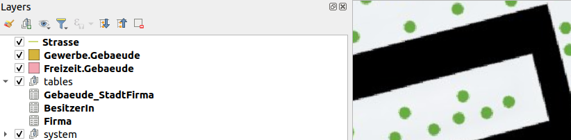
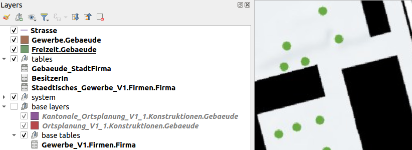
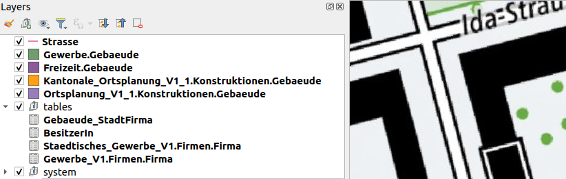
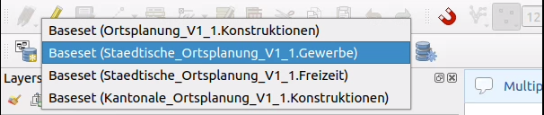
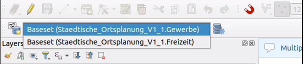

Optimierte Projekte für erweiterte Modelle
Wenn ein Modell oder Topic erweiterte Klassen enthält, werden die inklusiven Basisklassen in der physischen Datenbank implementiert. Die Benutzer:innen wollen nur sehen, was für sie relevant ist, und arbeiten meist auf der am meisten erweiterten Instanz der Topics/Klassen. Model Baker erkennt die irrelevanten Tabellen und bietet Optimierungsstrategien an.
In dem Workflow-Assistenten kannst du die Optimierungs-Strategie wählen und erhältst einen hübsch aufbereiteten Layerbaum und Formulare.
Aber was wird im Backend gemacht?
Backend-Lösung
Annahmen
Da es unmöglich ist, alle Fälle zu berücksichtigen, müssen wir einige Annahmen darüber treffen, was meistens der Use-Case wäre.
- Wenn du eine Basisklasse mit dem gleichen Namen erweiterst, beabsichtigst du, sie zu „ersetzen“, andernfalls würdest du sie umbenennen.
- Wenn du eine Basisklasse mehrfach erweiterst (was du mit unterschiedlichen Namen tust), dann beabsichtigst du, sie zu „ersetzen“.
- Ausnahme für die beiden obigen Fälle: Wenn du die Klasse im selben Modell, aber in einem anderen Topic erweitert hast (denn wenn du beabsichtigen würdest, sie zu „ersetzen“, hättest du sie als
ABSTRACTdefiniert).
Fazit
- Basisklassen mit gleichnamigen Erweiterungen sind irrelevant
- Basisklassen mit mehrfachen Erweiterungen sind irrelevant
- Ausser wenn die Erweiterung im selben Modell liegt, dann ist sie nicht irrelevant, sondern wird umbenannt
Und das bedeutet
Eine Tabelle ist irrelevant, wenn:
Wir die Tabelle als Basisklasse mit gleichnamiger Erweiterung in einem anderen Modell finden ODER wir die Tabelle in der Basisklasse mit mehrfachen Erweiterungen in einem anderen Topic, aber demselben oder dem erweiterten Modell finden.
Einschränkungen
Es gibt Use-Cases, die nicht behandelt werden können, wie zum Beispiel:
- Wenn eine Klasse in einem anderen Modell erweitert wird (aber nicht in dem, das du importierst, sondern in einem abhängigen Modell, so dass es ebenfalls importiert wird), könnte sie deswegen irrelevant sein, aber du hättest sie trotzdem benötigt.
- Wenn du ein Topic erweiterst und eine nicht-erweiterte Basisklasse hast, die auf eine Basisklasse verweist, die eine Erweiterung hat, dann wird die referenzierte Basisklasse irrelevant sein. Aber vielleicht möchtest du sie.
Was ist dann zu tun? Nun, du hast immer die Option für die NONE/Keine Strategie.
Strategien
Lass uns das folgende Beispielmodell und seine Implementierung gemäss den Strategien auf einer mit smart2intehritance erstellten Datenbank anschauen.
Beispiel Ortsplanung
Mehr oder weniger reales Praxisbeispiel mit 3 Tiefen und mehrfachen Erweiterungen. Stufe 2 (kantonal) erweitert Stufe 1 (national) und Stufe 3 (städtisch) erweitert Teile von Stufe 2 und Teile von Stufe 1.
Ortsplanung_V1_1verwendet (nicht erweitert)Infrastruktur_V1.Kantonale_Ortsplanung_V1_1erweitertOrtsplanung_V1_1(TOPICKonstruktionen).Gewerbe_V1.Staedtisches_Gewerbe_V1erweitertGewerbe_V1.Staedtische_Ortsplanung_V1_1erweitertKantonale_Otsplanung_V1_1(TOPICKonstruktionen) und verwendetStaedtisches_Gewerbe_V1.
Siehe die Modelle unten...
Hide (verstecken) Strategie
Basisklassen-Layer mit gleichnamigen Erweiterungen werden ausgeblendet und Basisklassen-Layer mit mehrfachen Erweiterungen ebenfalls. Ausser wenn die Erweiterung im selben Modell liegt, dann wird sie nicht ausgeblendet, sondern umbenannt.

Beziehungen von ausgeblendeten Layern werden nicht erstellt und somit die Widgets für sie ebenso wenig.
Note
Mit smart1inheritance würden die erweiterten Gebaeude-Klassen alle in einem Layer mit einem t_type zusammengefasst, der definiert, um welche Art von Erweiterung es sich handelt. Diese Strategie blendet die irrelevanten Werte für ‘t_type’ aus.
Group (gruppieren) Strategie
Basisklassen-Layer mit gleichnamigen Erweiterungen werden gruppiert, Basisklassen-Layer mit mehrfachen Erweiterungen ebenfalls. Ausser wenn die Erweiterung im selben Modell liegt, dann wird sie nicht gruppiert, sondern umbenannt.

Beziehungen von gruppierten Layern werden erstellt, aber Widgets werden in das Formular nicht hinzugefügt.
None (keine) Strategie
Unabhängig von erweiterten Modellen (aber ziemlich eng damit verbunden), eliminieren wir allgemein mehrdeutige Layernamen. Das bedeutet:
- Wenn der Layername mehrdeutig ist, hänge den Topic-Namen als Suffix an.
- Wenn der Layername immer noch mehrdeutig ist, hänge den Modellnamen als Suffix an.

Beispiel-Modelle
Stufe 1 (national)
INTERLIS 2.3;
/* Ortsplanung as national model importing the infrastrukture used for using geometry types and connectiong to strasse */
MODEL Ortsplanung_V1_1 (en) AT "https://modelbaker.ch" VERSION "2023-03-29" =
IMPORTS Infrastruktur_V1;
TOPIC Konstruktionen =
DEPENDS ON Infrastruktur_V1.Strassen;
CLASS Gebaeude =
Name : MANDATORY TEXT*99;
Geometrie : MANDATORY Infrastruktur_V1.CHSurface;
END Gebaeude;
CLASS BesitzerIn =
Vorname : MANDATORY TEXT*99;
Nachname : MANDATORY TEXT*99;
END BesitzerIn;
ASSOCIATION Gebaeude_BesitzerIn =
BesitzerIn -- {0..1} BesitzerIn;
Gebaeude -- {0..*} Gebaeude;
END Gebaeude_BesitzerIn;
ASSOCIATION Gebaeude_Strasse =
Strasse (EXTERNAL) -- {0..1} Infrastruktur_V1.Strassen.Strasse;
Gebaeude -- {0..*} Gebaeude;
END Gebaeude_Strasse;
END Konstruktionen;
END Ortsplanung_V1_1.
INTERLIS 2.3;
/*National company register */
MODEL Gewerbe_V1 (en) AT "https://modelbaker.ch" VERSION "2023-03-29" =
TOPIC Firmen =
CLASS Firma =
Name : TEXT;
END Firma;
END Firmen;
END Gewerbe_V1.
Stufe 2 (kantonal)
INTERLIS 2.3;
/* Extended Ortsplanung as cantonal model importing national model */
MODEL Kantonale_Ortsplanung_V1_1 (en) AT "https://modelbaker.ch" VERSION "2023-03-29" =
IMPORTS Ortsplanung_V1_1;
TOPIC Konstruktionen EXTENDS Ortsplanung_V1_1.Konstruktionen =
CLASS Gebaeude (EXTENDED)=
Beschreibung: TEXT;
Referenzcode: TEXT;
!!@ ilivalid.msg = "Beschreibung and/or Referenzcode must be defined."
SET CONSTRAINT DEFINED (Beschreibung) OR DEFINED (Referenzcode);
END Gebaeude;
END Konstruktionen;
END Kantonale_Ortsplanung_V1_1.
Stufe 3 (städtisch)
INTERLIS 2.3;
/* Extended Ortsplanung as city model importing cantonal (and with this the national) model and the city extension of the gewerbe model (and with this the national gewerbe).*/
MODEL Staedtische_Ortsplanung_V1_1 (en) AT "https://modelbaker.ch" VERSION "2023-03-29" =
IMPORTS Kantonale_Ortsplanung_V1_1, Staedtisches_Gewerbe_V1;
!! Freizeit is an extension of the cantonal Konstruktionen (note that there is a constraint there)
TOPIC Freizeit EXTENDS Kantonale_Ortsplanung_V1_1.Konstruktionen =
OID AS INTERLIS.UUIDOID;
CLASS Gebaeude (EXTENDED) =
Unterhaltungsart : TEXT*99;
istGeheim: BOOLEAN;
!!@ ilivalid.msg = "Beschreibung needed when top secret."
SET CONSTRAINT WHERE istGeheim:
DEFINED (Beschreibung);
END Gebaeude;
END Freizeit;
!! Gewerbe is an extension of the cantonal Konstruktionen (note that there is a constraint there)
TOPIC Gewerbe EXTENDS Kantonale_Ortsplanung_V1_1.Konstruktionen =
OID AS INTERLIS.UUIDOID;
DEPENDS ON Staedtisches_Gewerbe_V1.Firmen;
CLASS Gebaeude (EXTENDED) =
Nutzungsart : TEXT*99;
END Gebaeude;
ASSOCIATION Gebaeude_StadtFirma =
StadtFirma (EXTERNAL) -- {0..*} Staedtisches_Gewerbe_V1.Firmen.Firma;
Gebaeude -- {0..*} Gebaeude;
END Gebaeude_StadtFirma;
END Gewerbe;
END Staedtische_Ortsplanung_V1_1.
INTERLIS 2.3;
/*Extended Gewerbe as city model importing the national model */
MODEL Staedtisches_Gewerbe_V1 (en) AT "https://modelbaker.ch" VERSION "2023-03-29" =
IMPORTS Gewerbe_V1;
TOPIC Firmen EXTENDS Gewerbe_V1.Firmen =
OID AS INTERLIS.UUIDOID;
CLASS Firma (EXTENDED)=
EthischeBeurteilung : TEXT;
!!@ ilivalid.msg = "Needs an ethical evaluation (EthischeBeurteilung)"
SET CONSTRAINT DEFINED (EthischeBeurteilung);
END Firma;
END Firmen;
END Staedtisches_Gewerbe_V1.
Basket-Handling
In den Beispiel-Modellen ist die Klasse BesitzerIn im Topic Ortsplanung_V1_1.Konstruktionen entworfen. Wenn du jedoch an einem erweiterten Topic arbeitest (Staedtische_Ortsplanung_V1_1.Freizeit oder Staedtische_Ortsplanung_V1_1.Gewerbe), musst du die Objekte von BesitzerIn im dedizierten Basket erfassen und nicht im Basket, der eine Instanz des Basis-Topics ist.
Der Dastaset Selector stellt dir alle Baskets zur Verfügung, die du gemäss der Strategie benötigst.
Baskets der None (keine) Strategie
Bei nicht-optimierten Projekten blendet Model Baker nichts für dich aus. Du kannst Daten auf jeder Vererbungsstufe erfassen, und das bedeutet, dass alle Topics, die diese Klasse enthalten, bereitgestellt werden.

Baskets der Hide (verstecken) oder Group (gruppieren) Strategie
Bei optimierten Projekten siehst du nur die Baskets der relevanten Topics. Dies sind die Topics, die am stärksten erweitert sind (keine weiteren Erweiterungen vorhanden).
Die für den Layer BesitzerIn bereitgestellten Baskets sind die folgenden.

Verwirrung mit dem XML-Elementnamen
Manchmal gibt es Unklarheiten, wenn im Datenfile der XML-Elementname von Objekten vom XML-Elementnamen des Baskets abweicht. Finde hier die Erklärung.